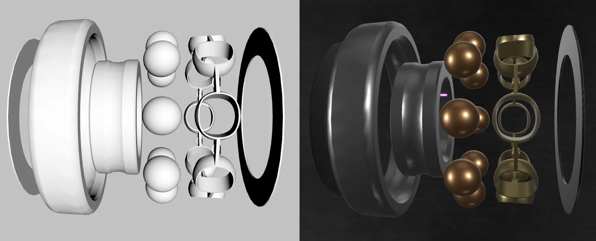
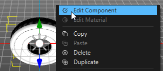
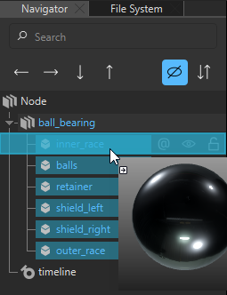
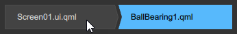
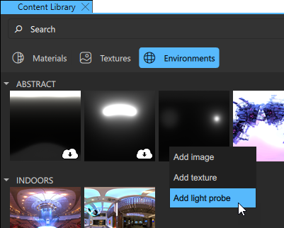
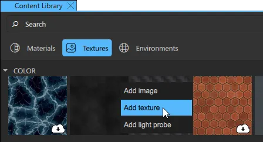
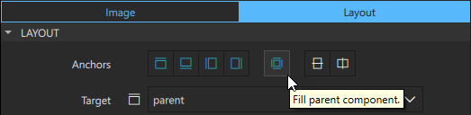
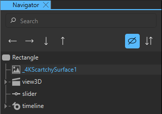

Setting up a 3D Scene

The Setting up a 3D Scene tutorial illustrates how you can set up and improve a 3D scene with the following:
- 3D models
- Materials
- Lights
- Environmental lights
- Background images
The assets you use in this tutorial are available in Content Library.
To follow this tutorial, you need to first download the starting project from here.
Download the completed project from here.
This tutorial requires that you know the basics of Qt Design Studio, see Getting Started.
The Starting Project
The starting project consists of an animated 3D model of a ball bearing. Control the animations with a slider and a switch in the user interface.
Besides the 3D model, the 3D scene also has the default camera and the default directional light.
Running the Tutorial Project
To open the tutorial project in Qt Design Studio, open the .qmlproject file located in the root folder of the downloaded project.
Adding Materials to the 3D Models
First, use materials from Content Library on the ball bearing.
- In the 3D view, right-click the ball bearing and select Edit Component.

- From Content Library, drag materials to the different parts of the ball bearing in the Navigator view. Drag the following materials to the following parts:
- Chrome to inner_race and outer_race.
- Copper to balls.
- Gold to retainer.
- Carbon Fiber to shield_left and shield_right.
Note: The first time you use an asset from Content Library, you need to download it.

- Select Screen01.ui.qml in the breadcrumb in the top menu bar to return to the 3D scene.

When you run the application or live preview, notice that you don't see much of the materials. The next step is to set up the environmental light.
Adding Environmental Lighting to the Scene
Environmental lighting is a good way to create a realistic light for your scene.
- In Content Library, go to the Environments tab.
- Right-click the image BasicLights3_4k.hdr and select Add Light Probe.

Setting an image as a light probe for a scene adds the image as the source for the image-based lighting and also sets it as a skybox, meaning that the same image is used as the background in the scene.
When you run the application, notice an improvement in the scene lighting.
Next, adjust the environmental light. As you will add a background image to the scene later, you don't want to use the skybox.
- In the Navigator view, select sceneEnvironment.
- In the Properties view, set Background Mode to Transparent.
You also want to increase the brightness of the light a bit. In the Properties view, set Exposure to 10.
Adding a Background Image to the Scene
In the final step of this tutorial, you add a background image to your scene.
- Go to the Textures tab in Content Library.
- Right-click the image 4kScratchySurface.png and select Add Texture

This adds the image as a texture to the project. It is now available in the Assets view.
- From the Assets view, drag 4KScratchySurface.png to Rectangle in the Navigator view.
- Go to the Layout tab in Properties and set Anchors to FillParentComponent.

- Go to the Image tab and set Fill Mode to Stretch.
- The background is rendered on top of the 3D scene as it is located at the bottom of the Navigator view. With the background image selected, select the down arrow to move it to the top of the hierarchy.

See also Content Library.